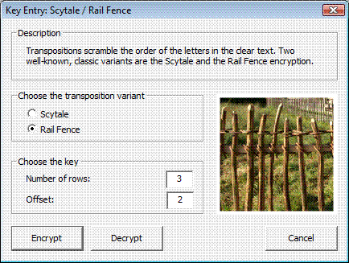

You can reach this dialog via the menu entry Crypt/Decrypt \ Symmetric (classic) \ Scytale / Rail Fence.

Use this dialog to execute simple transpositions (Scytale / Rail Fence).
Remark:
By clicking the button Text options you can quickly change the current CrypTool alphabet. This should be noted because both implementations (Scytale and Rail Fence) discard any characters of the input text that are not part of the current CrypTool alphabet before encryption.